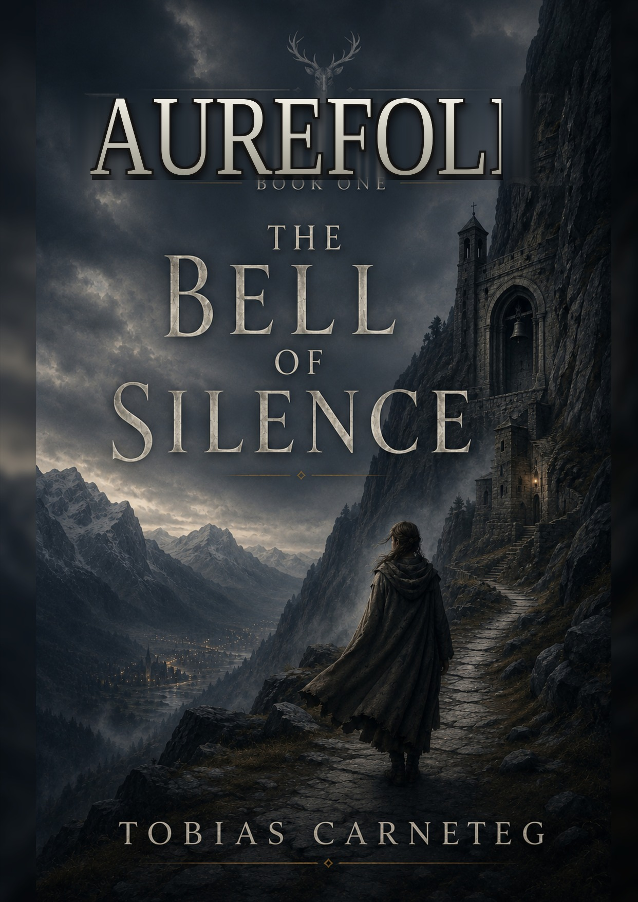

Book One: The Bell of Silence
AUREFOLD — BOOK ONE
THE BELL OF SILENCE
A goatherd who will not say more than she knows. A house built to test those who claim to hear.
BOOK ONE — OUT NOW · READ THE EBOOK FREE

Cover — The Bell of Silence
Content note. Aurefold is a mature epic fantasy for adult readers — the novels contain graphic violence and other mature themes. The free excerpt (prologue and Chapter One) is suitable for all readers.
Read Book One — free
The Bell of Silence is out now as an ebook — and it's free. Read it on Amazon Kindle, or download it straight from here. The printed edition is the goal of the coming crowdfunding campaign.
Read it wherever suits you — just know Amazon never tells me you exist. The reading list below does.
I'll email you the day the printed edition is real — nothing before that.
The reading list opens soon — for now, follow free on Patreon.
The story
In the Light Heights — the high, silent valleys of the northwest — a goatherd named Sela hears something on the wind that she cannot explain. She will not pretend to more than she knows, and she will not take back what she does. In a realm sworn to ten great houses, that plainness is its own kind of danger.
The testing of what she heard falls to Brother Tomas, a man carrying the one thing a tester should not own — his first doubt. Above them both stands Mother Alaine, half a lifetime in the listening house, keeper of more memory than any record holds. Beyond the mountains, the ten houses are already gathering their testimony for a four-hundred-year jubilee, and a chronicler is coming to write the valley down.
The Bell of Silence asks one question and refuses to make it easy:
What do you do with a truth you cannot prove — and a silence everyone else insists on reading for you?
Find the listening house on the map →
What you can expect
- A grounded, human epic fantasy told at the scale of one valley and one testing.
- Ten great houses, each a different wager about what people are for.
- A story about testimony, memory, and the cost of an honest answer.
- An interlude that steps outside the valley — to the desks where its story is being decided.
- A question the book trusts you to sit with, rather than solving it for you.
Out now — and the road to print
The Bell of Silence — Book One, approximately 106,700 words across 47 chapters and one interlude — is available now as a free ebook. What comes next is the printed book: professional proofreading, cover and interior design, print proofs, and a crowdfunding campaign to fund the production.
You can follow that road for free, or help carry the book to print. See how to support, or follow free on Patreon for every major step.
The series
The Bell of Silence is a complete story in itself — but it is Book One. The second book has a name: The Road Still Open, now in development. No spoilers, no promises about when — just the road ahead. Follow the Journal and it gets written down here as it happens.
Ratings & reviews
No reviews yet — be the first to leave one.